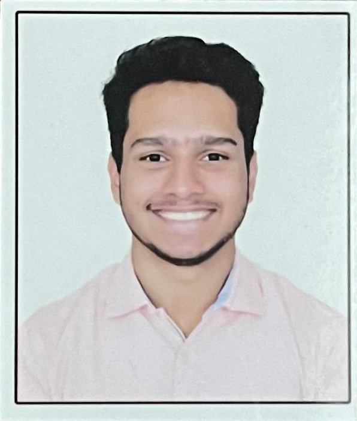

Resume

Summary
I'm Vedant Adka, a Computer Science student at VIT Chennai with experience in full-stack and mobile app development.
I enjoy solving real-world problems through code and specialize in Flutter, Python, and Flask, with a strong interest in automation and system design.
Education
- Vellore Institute of Technology, Chennai, India
- B.Tech in Computer Science and Engineering
September 2021 - Present | CGPA: 8.80
- Matoshri Junior College, Nashik, India
- 12th Grade | 2021 | Percentage: 90.5%
- Nirmala Convent High School, Nashik, India
- 10th Grade | 2019 | Percentage: 84.6%
Work Experience
Zipp Mat, Bengaluru, India
API Developer Intern
August 2023 - September 2023
- Implemented JWT authentication using Flask and PyJWT.
- Integrated Redis for token caching, enhancing scalability and performance.
- Developed backend services for secure email communication.
- Conducted unit, integration, and E2E testing for authentication systems.
- Applied best practices in secure and user-friendly API development.
Skills
- Languages: Java, C++, C, Python, SQL, Dart
- Technical Areas: Data Structures & Algorithms, Web Development, App Development, Computer Networks, DBMS, Operating Systems, OOP
- Frameworks & Tools: Flutter, Flask, Visual Studio Code, Android Studio, MATLAB, RStudio
- Web Technologies: HTML, CSS
Certifications & Achievements
The Complete Flutter Development Bootcamp with Dart - Udemy (2024)
- Gained expertise in building mobile applications with Flutter & Dart.
- Learned state management, API integration, responsive UI, and cross-platform deployment.
- Certificate Link
Enactus - Operational Team Member
- Played a key role in sales, marketing, and logistics for national-level competitions.
- Helped lead the team to qualify for the national-level competition.
Cittaa Student Chapter - Content & Design Team
- Contributed to content creation and event support for technical and community initiatives.